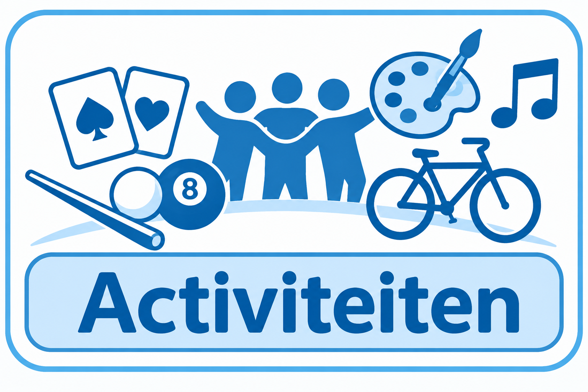
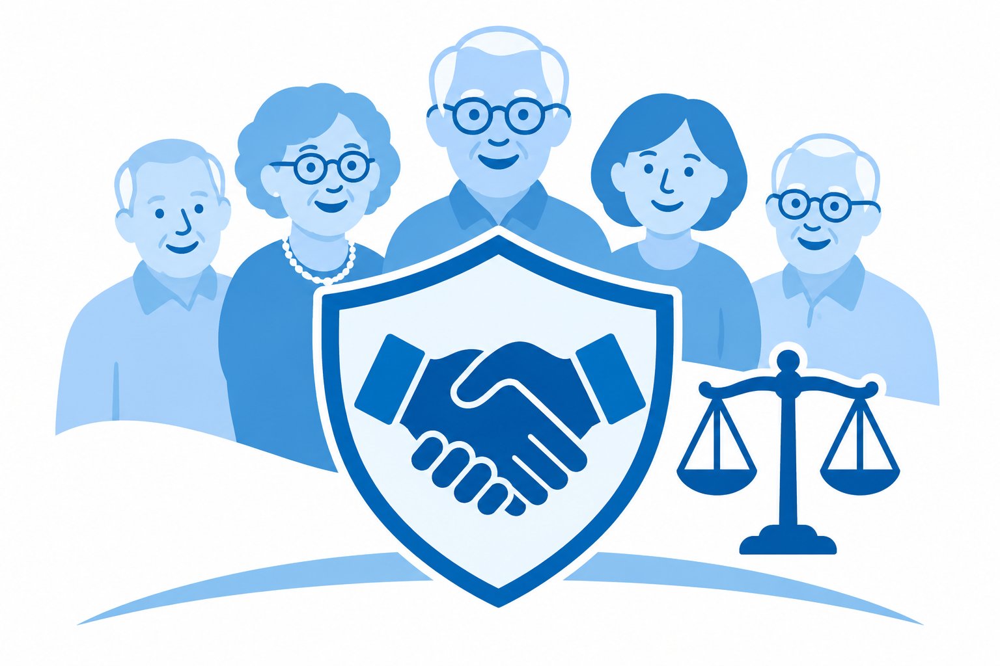

Activiteiten
Bekijk de 39 activiteiten in vijf categorieën en vind iets dat bij u past.
Bekijk activiteiten Senergiek NuenenSeniorenverenigingSamen actief en betrokken
Senergiek NuenenSeniorenverenigingSamen actief en betrokkenOntdek activiteiten en informatie over ondersteuning en belangenbehartiging in Nuenen.

Bekijk de 39 activiteiten in vijf categorieën en vind iets dat bij u past.
Bekijk activiteiten
Bekijk informatie over advies, ondersteuning, praktische hulp en wegwijzers.
Bekijk ondersteuning